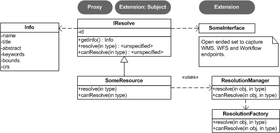

The uDIg Catalog is used to mange and interact with spatial resources.
The style of programming used for the uDig Catalog is similar to that of the Eclipse IDE (where concepts such as Project / IResource / IFile are defined).
Since uDig does not depend on the Eclipse IDE (we have no need of a compile / build cycle) we provide are making use of our own interfaces ICatalog, IService and IGeoResource covered on this page. By making use of our own API we also have been able to address a number of concerns specific to spatial data; almost all our data is so bug, or remote, or both that latency is an issue. It is very important to us that you know when you are making use of spatial data that make take some time to process, or has the possibility of an I/O error.
The CatalogPlugin provides the following services:
The CatalogPlugin supports several formats right out of the box and is easily extended for custom content.
CatalogPlugin provides for the following:
The Catalog plug-in is the "Activator" class for net.refractions.udig.catalog - as such it extends AbstractUIPlugin for the following:
The CatalogPlugin is mostly used to access a single Local Catalog used to manage live connections to your databases, external services and local files. The local catalog is used to track all "active" data connections; even if you find information in a remote catalog, it will be added to the local catalog as you start to use it.
ICatalog catalog = CatalogPlugin.getLocalCatalog(); IGeoResourceImpl shapefile = catalog.getById( IGeoResource.class, url, progressmonitor );
The above code looks up an existing service in the catalog, for more information (including adding new data) please check out the section on ICatalog below.
The CatalogPlugin keeps track of all the catalogs (local and remote) that can be used to find spatial content.
for( ICatalog catalog : CatalogPlugin.getCatalogs() ){ try { catalog.search( pattern, bbox, process ); } catch( IOException problem ){ catalog.getLog( new Status( IStatus.WARNING, CatalogPlugin.ID, IStatus.OK, "Failed to search with:"+pattern, t) ); } }
The above example makes use of CatalogPlugin, any problems are reported using the CatalogPlugin ID to the logging system. We will cover some of the other uses of ICatalog below.
ICatalog is the interface used to represent a generic "catalog" of spatial resources and services, you can think of it as being similar to a web search engine.
The following ICatalog methods are used when working with remote services:
Please keep in mind that the catalog tracks a great deal of information about your services and resources; the reason find returns a list (rather than just a single entry) is the same information may be available from a number of sources. Having a range of alternatives available is useful in a world where external servers are sometimes down for maintenance.
The local catalog (implemented by the CatalogImpl class) is responsible for managing a list of all the services known to the uDig application. The local catalog is also responsible for tracking which Services are in use and tracking any life cycle changes (some services such as Databases are expensive to connect to and care must be taken to clean up after their use).
The following ICatalog methods are used when working with a local catalog
The following ICatalog methods are safe to call from a user interfae (ie are non blocking):
Lets start with the most specific, and the most useful, resource stored in a Catalog. The IGeoResource interface represents real information, the kind you can display on screen or perform analysis on.
Here are a few examples to get us started with:
The IGeoResource implementation does not place any restrictions on the interface used to interact with the external resource. That said here are our top contenders for most popular interface:
From GeoTools:
From Java:
Please see the Advanced section for details on making your own content available: CAD file formats, feature content from other toolkits, and dynamically generated content are all exciting possibilities.
IGeoResource instances can formed into a tree:
....pending...
The CatalogPlugin uses the interface IService to model a local or remote service.
Here are some examples to get us started:
If a IService is making spatial data available; there is a helper method available that will list all GeoResources
CatalogPlugin uses the model of a "handle" to allow access to spatial resources.
The concept of a resource handle is represented as the IResolve class:
Here are the core responsibilities of IResolve interface:
IResolve handles can form a tree using the following methods:
Finally, just because a handle exists does not mean the real resource resources exists or is working. A service may be down, or a shapefile may not be created yet.
Here is how to check on the status of a IResolve:
Note: Methods that are blocking make use of a IProgressMonitor, and throw an IOException in the event of a problem. This allows for both feedback during the operation, and strongly indicates to calling code that blocking input/output will occur.
Let's quickly work with an example (to make this real)
public count shapes( File shapefile ){ CatalogPlugin catalog = CatalogPlugin.getDefault(); IServiceFactory factory = catalog.getServiceFactory(); for( IResolve resolve : factory.acquire( shapefile.toUrl() ) ){ if( resolve.canResolve( DataStore.class ) ){ DataStore shape = resolve.resolve( DataStore.class ); String typeName = shape.getTypeNames()[0]; return shape.getFeatureSource( typeName ).count(); } } return 0; }
The IResolve interface follows the same design as the normal Eclipse IResource class.
IResolve offers the following advantages over normal Eclipse IResource:
To extend catalog for additional formats you will need to make an implementation of IService, IGeoResource and a WizardPage for your new content.
We are going to launch right into technical details here (this is the advanced section). If you require additional background information please consider the following references:
Common mistakes:
Just because the core uDig team knows how to do a few tricks with Shapefiles, and turn them into a FeatureSource does not mean you are left out of the game. You can teach the uDig catalog system new tricks, making uDig classes aware of your applications needs at runtime.

The ResolutionManager processes an extention point binding IResolve to new classes, you can use this facility to integrate your own functionality with the uDig application.
When making your own instance of IResolve you can also implement IAdaptable (we ensured that no method names would conflict). Implementing IAdaptable, and providing an adapter for IResource allows for seamless integration with the Eclipse IDE.
This is out of scope for our current development effort - however the implementation is straight forward and would allow integration of the GISPlatform with the wider Eclipse community. The Eclipse workbench already checks for the classes supporting IAdaptable, and will automatically integrate any class that responds to isAdaptable( IResource.class ).
(c) Copyright (c) 2004-2008 Refractions Research Inc. and others.